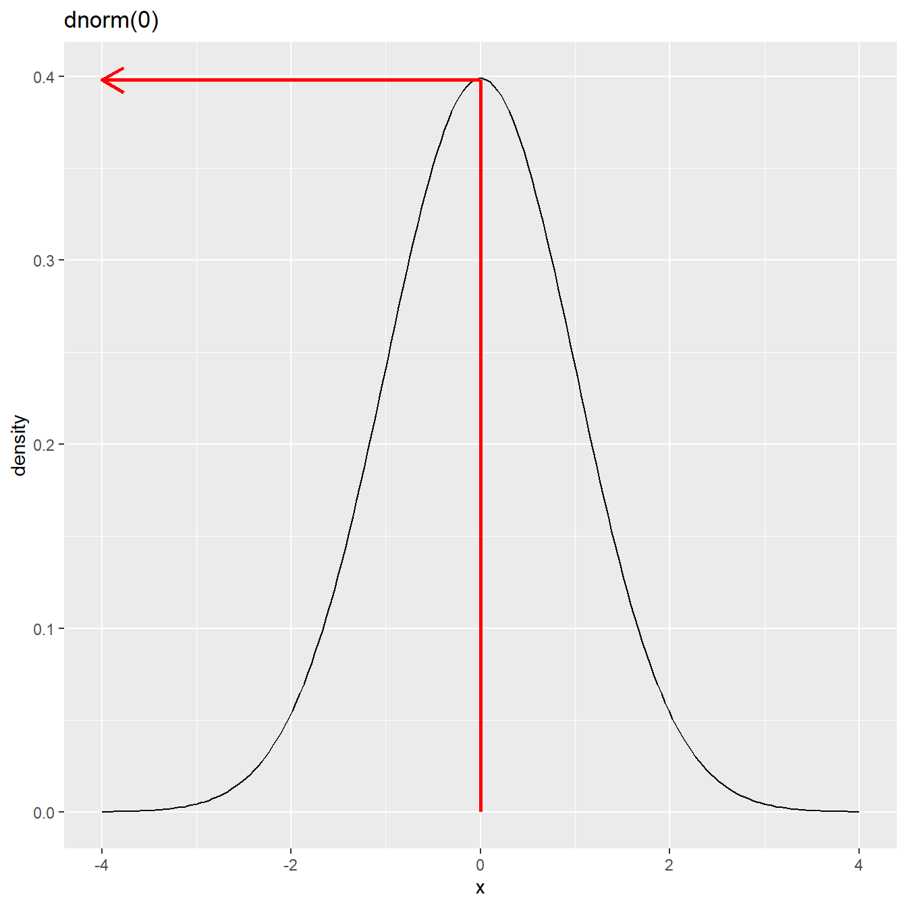
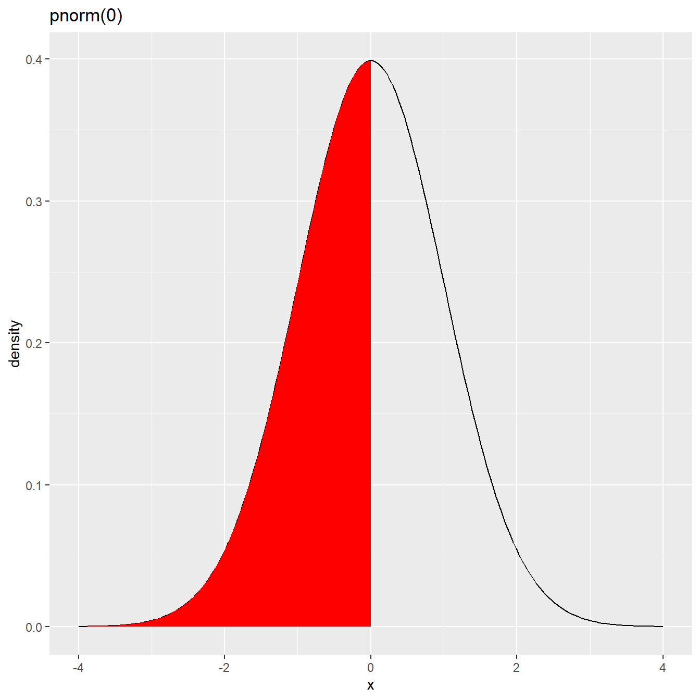
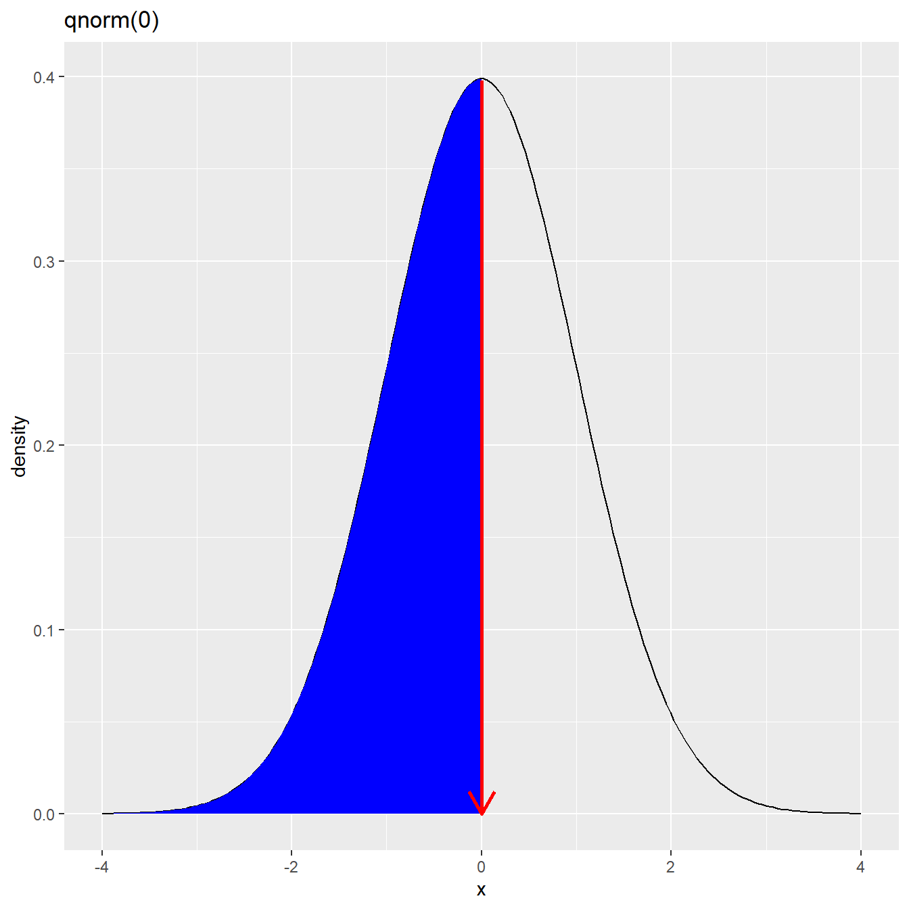

mean(1:10)[1] 5.5Built-in functions are predefined functions that come with R (or any programming language). You don’t need to define them yourself. They are available to use immediately after starting R.
A function call in R is always written as:
function_name(arguments)Parentheses () are always required.
Inside the parentheses, you place the inputs (arguments) that the function needs to work.
Example
mean(1:10)[1] 5.5To obtain the help file of a function you can type
?meanor
help(mean)sum(1, 2, 3, 4) # Sum → 10[1] 10prod(2, 3, 4) # Product → 24[1] 24abs(-7) # Absolute value → 7[1] 7sign(-15) # Sign → -1[1] -1sqrt(25) # Square root → 5[1] 5factorial(5) # Factorial → 120[1] 120cumsum(c(1,2,3,4)) # Cumulative sum → 1 3 6 10[1] 1 3 6 10cumprod(c(1,2,3,4)) # Cumulative product → 1 2 6 24[1] 1 2 6 24exp(1) # e^1 → 2.718282[1] 2.718282log(10) # Natural log → 2.302585[1] 2.302585log10(1000) # Base-10 log → 3[1] 3log2(8) # Base-2 log → 3[1] 3round(3.14159, 2) # Round to 2 decimal places → 3.14[1] 3.14ceiling(3.2) # Round up → 4[1] 4floor(3.8) # Round down → 3[1] 3trunc(3.9) # Remove decimal → 3[1] 3signif(3.14159, 3) # Significant digits → 3.14[1] 3.14sin(pi/2) # Sine → 1[1] 1cos(0) # Cosine → 1[1] 1tan(pi/4) # Tangent → 1[1] 1asin(1) # Inverse sine → π/2[1] 1.570796acos(0) # Inverse cosine → π/2[1] 1.570796atan(1) # Inverse tangent → π/4[1] 0.7853982sinh(1) # Hyperbolic sine[1] 1.175201cosh(1) # Hyperbolic cosine[1] 1.543081tanh(1) # Hyperbolic tangent[1] 0.7615942max(1,4,2,5) # Maximum → 5[1] 5min(1,4,2,5) # Minimum → 1[1] 1range(1,4,2,5) # Range → 1 5[1] 1 5Sample data
x <- c(5, 7, 9, 10, 12, 15, 18)
y <- c(2, 4, 6, 8, 10, 12, 14)mean(x) # mean[1] 10.85714median(x) # median[1] 10var(x) # variance[1] 20.47619sd(x) # standard deviation[1] 4.525062range(x) # range[1] 5 18IQR(x) # Inter Quartile Range[1] 5.5quantile(x, probs = c(0.25, 0.5, 0.75)) # quantiles 25% 50% 75%
8.0 10.0 13.5 quantile(x, probs = 0.9) # percentiles 90%
16.2 cov(x, y) # Covariance[1] 19.33333cor(x, y) # correlation[1] 0.9888918Each probability distribution in R is associated with four functions.
Naming convention for the four functions:
For each function there is a root name. For example, the root name for the normal distribution is norm. This root is prefixed by one of the letters d, p, q, r.
d prefix for the distribution function
p prefix for the cumulative probability
q prefix for the quantile
r prefix for the random number generator
Example: dnorm, pnorm, qnorm, rnorm
The general formula for the probability density function of the normal distribution with mean \(\mu\) and variance \(\sigma\) is given by
\[ f_X(x) = \frac{1}{\sigma\sqrt{(2\pi)}} e^{-(x-\mu)^2/2\sigma^2} \]
If we let the mean \(\mu=0\) and the standard deviation \(\sigma=1\), we get the probability density function for the standard normal distribution.
\[ f_X(x) = \frac{1}{\sqrt{(2\pi)}} e^{-(x)^2/2} \]
\[ f_X(x) = \frac{1}{\sqrt{(2\pi)}} e^{-(x)^2/2} \]
dnorm(0)[1] 0.3989423
pnorm(0)[1] 0.5
]
qnorm(0.5)[1] 0
| Test | Convert |
|---|---|
| is.numeric() | as.numeric() |
| is.character() | as.character() |
| is.vector() | as.vector() |
| is.matrix() | as.matrix() |
| is.data.frame() | as.data.frame() |
| is.factor() | as.factor() |
| is.logical() | as.logical() |
| is.na() |